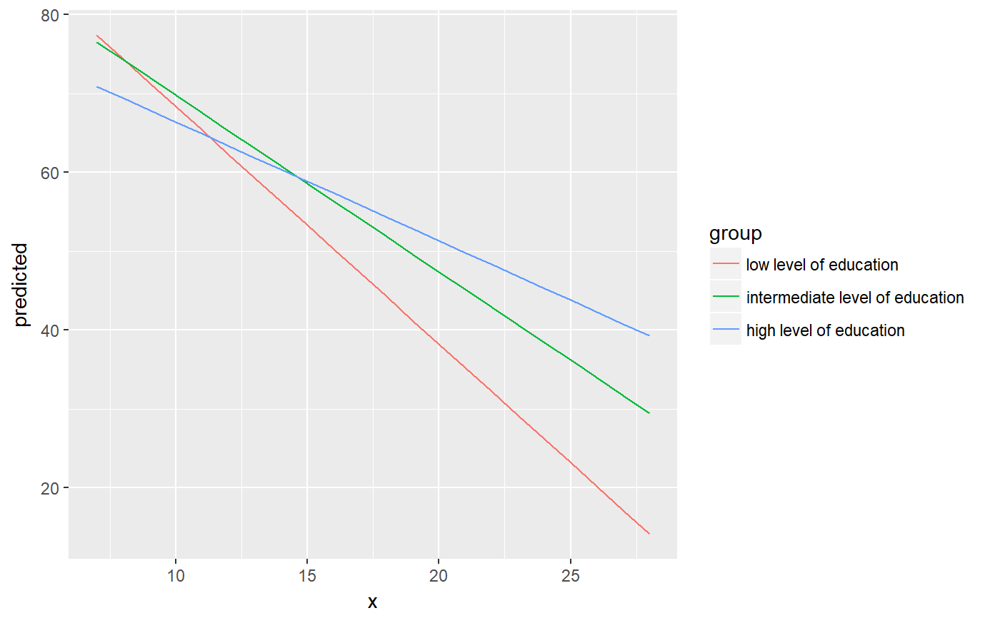
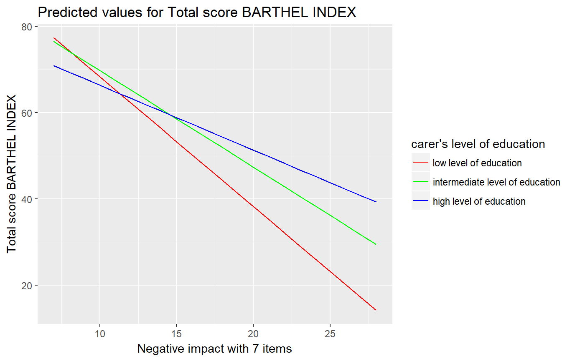
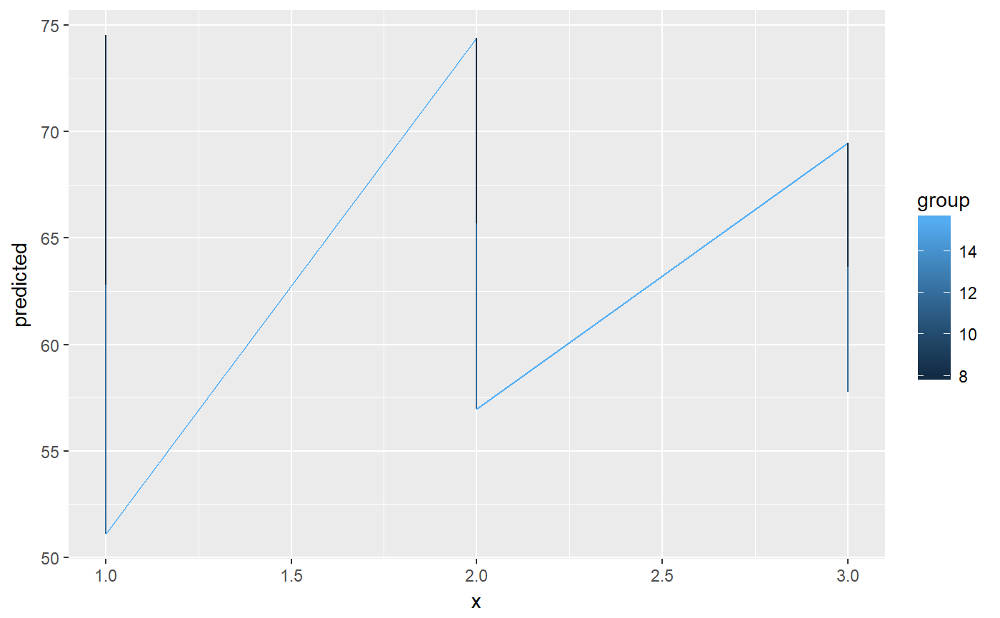

R/gginteraction.R
gginteraction.Rdgginteraction() computes marginal effects of interaction terms.
It internally calls effect and
puts the result into tidy data frames.
gginteraction(model, mdrt.values = "minmax", swap.pred = FALSE, ci.lvl = 0.95, x.as.factor = FALSE, ...)
| model | A fitted model object, or a list of model objects. Any model that is supported by the effects-package should work. |
|---|---|
| mdrt.values | Indicates which values of the moderator variable should be used to calculate marginal effects of the interaction.
|
| swap.pred | Logical, if |
| ci.lvl | Numeric, the level of the confidence intervals. For |
| x.as.factor | Logical, if |
| ... | Further arguments passed down to |
A tibble (with ggeffects class attribute) with consistent data columns:
xthe values of the model predictor to which the effect pertains, used as x-position in plots.
predictedthe predicted values, used as y-position in plots.
conf.lowthe lower bound of the confidence interval for the predicted values.
conf.highthe upper bound of the confidence interval for the predicted values.
groupthe name of x, used as grouping-aesthetics in plots.
gginteraction() only computes marginal effects for interaction terms,
in particular two-way interactions. Use ggeffect for
marginal effects for simple model terms. Or use ggpredict
for predictions from any model terms, including two- or three-way
interactions.
data(efc) efc$c172code <- sjmisc::to_factor(efc$c172code) fit <- lm(barthtot ~ c12hour + c161sex + c172code * neg_c_7, data = efc) gginteraction(fit)#> # A tibble: 63 x 5 #> x predicted conf.low conf.high group #> * <dbl> <dbl> <dbl> <dbl> <fct> #> 1 7 77.4 2.82 71.9 low level of education #> 2 7 76.5 1.77 73.0 intermediate level of education #> 3 7 70.9 3.26 64.5 high level of education #> 4 8 74.4 2.50 69.5 low level of education #> 5 8 74.3 1.55 71.2 intermediate level of education #> 6 8 69.4 2.89 63.7 high level of education #> 7 9 71.4 2.22 67.0 low level of education #> 8 9 72.0 1.35 69.4 intermediate level of education #> 9 9 67.9 2.55 62.9 high level of education #> 10 10 68.4 2.00 64.4 low level of education #> # ... with 53 more rows#> # A tibble: 63 x 5 #> x predicted conf.low conf.high group #> <dbl> <dbl> <dbl> <dbl> <fct> #> 1 7 77.4 71.9 82.9 low level of education #> 2 7 76.5 73.0 80.0 intermediate level of education #> 3 7 70.9 64.5 77.3 high level of education #> 4 8 74.4 69.5 79.3 low level of education #> 5 8 74.3 71.2 77.3 intermediate level of education #> 6 8 69.4 63.8 75.1 high level of education #> 7 9 71.4 67.0 75.7 low level of education #> 8 9 72.0 69.4 74.7 intermediate level of education #> 9 9 67.9 62.9 72.9 high level of education #> 10 10 68.4 64.4 72.3 low level of education #> # ... with 53 more rowsdat <- gginteraction(fit) ggplot(dat, aes(x, predicted, colour = group)) + geom_line() + labs( colour = get_legend_title(dat), x = get_x_title(dat), y = get_y_title(dat), title = get_title(dat) ) + scale_color_manual( values = c("red", "green", "blue"), labels = get_legend_labels(dat) )# use continuous term on x-axis, but use values mean +/- sd as groups dat <- gginteraction(fit, mdrt.values = "meansd", swap.pred = TRUE) ggplot(dat, aes(x, predicted, colour = group)) + geom_line()